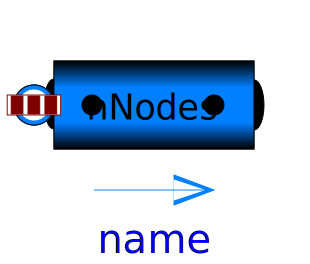

.
Modelica
.
Fluid
.
Pipes
Information
Contents
Name
Description
StaticPipe
Basic pipe flow model without storage of mass or energy

DynamicPipe
Dynamic pipe model with storage of mass and energy
BaseClasses
Base classes used in the Pipes package (only of interest to build new component models)
Generated at 2020-06-05T07:38:22Z by
OpenModelica 1.16.0~dev-420-gc007a39